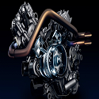
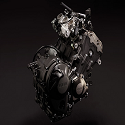

SEE WHAT DCT IS ALL ABOUT
Our Automatic Dual-Clutch Transmission eliminates the clutch and shift levers. Shifting by itself, it makes riding simpler and rewards you with a smooth power delivery. Paddle shifters and selectable ride modes give you as much control as you’d like.
The Honda Automatic DCT Transmission makes the best parts of riding more enjoyable while, reducing unnecessary hassles. With all the performance of a manual transmission and the convenience of an automatic, you’ll stay connected to your machine, and free to experience the world around you. There’s a lot to explore out there—let’s start by exploring DCT.
On the inside, the automatic DCT looks similar to a manual transmission with rugged steel gears. But this transmission has a brain. In automatic mode, it shifts up and down by itself. More importantly, it shifts smoothly for a seamless, uninterrupted power flow with no fear of stalling.
Because our DCT is built with steel gears inside, there are no drive belts to slip, break, or burn up, and there’s no torque converter. They’re as tough and efficient as any manual gearbox.
Because our DCT is built with steel gears inside, there are no drive belts to slip, break, or burn up, and there’s no torque converter. They’re as tough and efficient as any manual gearbox.
ENGINE TYPES IN OUR BIKES
| Single Cylinder | Twin Cylinder | Baseline Cylinder | KLM Cyclinder |
|---|---|---|---|
| XLS T-140 | XLS T-150 | XLS T-160 | XLS T-170 |
| YBR Z-1000 | YBR Z-SX6 | YBR N700 | YBR K290 |
| LKT 150 | LKT 180 | LKT 200 | LKT 220 |
| KTM XSR | KTM DUKE | KTM ZX78 | KTM R500 |